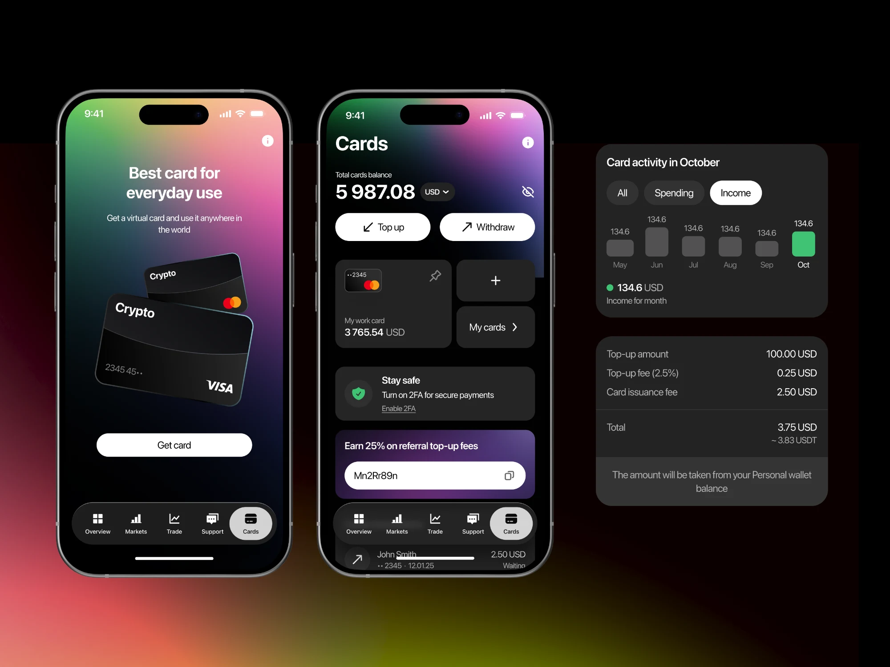
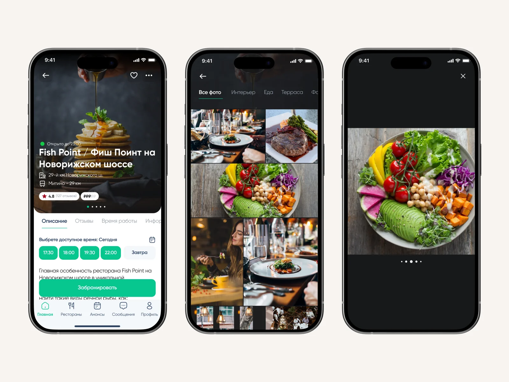

Запустить продукт
Пользовательские сценарии, визуальный язык и интерфейсы для передачи в разработку.
12+ лет развиваю B2B-сервисы, финансовые продукты и eCommerce – от исследования пользовательских сценариев до интерфейсов и дизайн-систем.
Сценарии, системы и работающие интерфейсы

Регистрация продукта и приложения, бюджетирование и подключение инфраструктуры – в одном сервисе.


Интернет-магазин, кабинет Бизнес-Партнера и общая дизайн-система.

Бронирование по календарю и плану зала, регистрация заведения и дашборд. Продукт в разработке.

Развитие биржи, кошелька и платежных сервисов: от трейдинга до виртуальных карт и Rewards.

Сквозной сценарий сделки: документы, проверка, статусы и работа операционной команды.



Поиск заведения, выбор времени и подтверждение брони на сайте и в мобильном приложении.
Пользовательские сценарии, визуальный язык и интерфейсы для передачи в разработку.
Исследование текущего процесса, поиск проблем и проектирование целостного опыта.
Общие токены, компоненты и правила для согласованного развития продукта.
Сильные продукты не создаются за один релиз. Они становятся лучше благодаря последовательным улучшениям, которые помогают им расти вместе с бизнесом и пользователями.
Так более десяти лет развивал интернет-магазин, Back Office и дизайн-систему Siberian Wellness как Product Designer и Design Lead.
Подробнее об опыте – в резюме ↗Давайте познакомимся
Расскажите о продукте, команде и формате сотрудничества, который вы предлагаете.